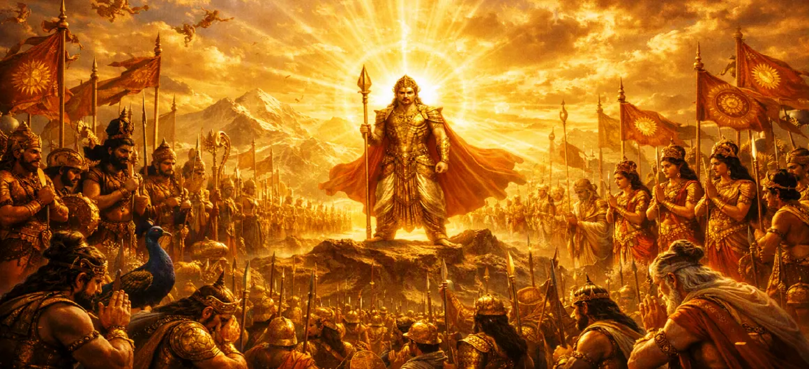

दिव्य सेना का जमावड़ा
कुमार खण्ड का अध्याय 21 दिव्य शक्तियों की विस्मयकारी लामबंदी का वर्णन करता है, जहां विविध दिव्य प्राणी और वीर योद्धा भगवान स्कंद की आज्ञा के तहत एकजुट होने के लिए सरवन में इकट्ठा होते हैं।
यह भव्य सभा तैयारियों के अंतिम चरण का प्रतीक है, जो अधर्म की ताकतों को खत्म करने के लिए दृढ़ संकल्पित प्रकाश की एक अजेय शक्ति का निर्माण करती है।
अध्याय 21 की मुख्य बातें और पूर्ण अवलोकन
भारी लामबंदी
ब्रह्मांड के सभी कोनों से दिव्य यजमान एकत्रित हो रहे हैं।
वीर योद्धा
भगवान स्कंद के पीछे विविध वीर सेनाएँ संगठित हो गईं।
एकीकृत उद्देश्य
व्यवस्था और धार्मिकता बहाल करने का एक लौकिक मिशन।
युद्ध की तैयारी
युद्ध के लिए साजो-सामान और आध्यात्मिक ढाँचा स्थापित करना।
सेनापति की समीक्षा
स्कंद का दिव्य अंतर्दृष्टि से अपनी अजेय सेना का निरीक्षण करना
मार्च संरेखण
तारकासुर के विरुद्ध आगे बढ़ने की तैयारी।
इस अध्याय में विस्तृत मुख्य विषय
1. स्वर्ग भर में लामबंदी का आह्वान
स्कंद की औपचारिक नियुक्ति के बाद, एक दिव्य पुकार सभी स्वर्गीय लोकों में गूंजती है। प्रत्येक देवता, दिव्य योद्धा और सैनिक को सरवना में इकट्ठा होने के लिए सम्मन मिलता है। स्थिति की तात्कालिकता स्पष्ट है - यही वह क्षण है जिसका वे इंतजार कर रहे थे, अपनी गरिमा को पुनः प्राप्त करने और राक्षस तारकासुर को हमेशा के लिए हराने का समय।
2. दिव्य सेनाओं और वीर नेताओं का आगमन
हर तरफ से शूरवीरों की टोलियाँ आती हैं। सेना ब्रह्मांडीय विविधता का एक शानदार प्रदर्शन है - इंद्र अपने वज्रधारी योद्धाओं के साथ, अग्नि विनाश की ज्वाला के साथ, हवाएं (मरुत), शक्तिशाली यक्ष, युद्ध में कुशल गंधर्व, और कई अन्य दिव्य प्राणी अपने नए सेनापति के चरणों में कर्तव्य के लिए रिपोर्ट करते हैं।
3. विविध दैवी सेना का संगठन
भगवान स्कंद ने कुशलतापूर्वक इन विविध समूहों को एक संरचित, अजेय लड़ाकू बल में संगठित किया है। दैवीय सटीकता के साथ, वह प्रत्येक सामान्य और इकाई को पद आवंटित करता है, यह सुनिश्चित करते हुए कि देवताओं की असमान शक्तियों का प्रभावी ढंग से उपयोग किया जाता है। संगठन न केवल सैन्य रणनीति को दर्शाता है, बल्कि एक लक्ष्य की दिशा में काम करने वाली विभिन्न ऊर्जाओं का पूर्ण सामंजस्य भी दर्शाता है।
4. भगवान स्कंद का दिव्य निरीक्षण और आशीर्वाद
स्कंद एकत्रित सेना के बीच से गुजरता है, उसकी उपस्थिति पूरी सभा को रोशन करती है। वह प्रत्येक नायक को स्वीकार करता है, उन्हें दिव्य प्रोत्साहन और शक्ति प्रदान करता है। उनकी एक झलक ही अकल्पनीय साहस पैदा करने के लिए काफी है, और उनका आशीर्वाद हर सैनिक को एक योद्धा में बदल देता है जो सबसे दुर्जेय राक्षसी ताकतों पर भी विजय पाने में सक्षम है।
5. युद्ध मानकों और मार्शल भावना को बढ़ाना
हवा युद्ध के नगाड़ों, शंखों और योद्धाओं की विजयी गर्जना की ध्वनि से भर जाती है। विभिन्न देवताओं और सेनापतियों के युद्ध मानक ऊंचे उठाए गए हैं, जो दिव्य आकाश में लहरा रहे हैं। सामूहिक मार्शल भावना जबरदस्त है, जो आसन्न संघर्ष के लिए पूर्ण अनुशासन, उद्देश्य और तत्परता का वातावरण बनाती है।
6. पूर्ण आत्मविश्वास और संकल्प का वातावरण
देवताओं के हृदय में कोई संदेह नहीं रह गया है। स्कंद को अपना मार्गदर्शक और सेनापति बनाकर वे जानते हैं कि जीत निश्चित है। सभी प्रतिभागियों के सामूहिक संकल्प से वातावरण विद्युतीकृत हो गया है, जो दैवीय शक्ति के एक विलक्षण, एकीकृत निकाय के रूप में अपने मिशन पर जाने के लिए पूरी तरह से तैयार हैं।
7. अध्याय 22 की ओर (तारकासुर के विरुद्ध मार्च)
दिव्य सेना अब पूरी तरह संगठित और अटल संकल्प से परिपूर्ण है। दिए गए आदेश के साथ, लामबंदी पूरी हो गई है, और निर्णायक प्रयास के लिए मंच पूरी तरह से तैयार है। यह सीधे अध्याय 22 में ले जाता है: **तारकासुर के विरुद्ध मार्च**, जहां संपूर्ण दिव्य सेना दुश्मन के गढ़ की ओर अपना ऐतिहासिक आंदोलन शुरू करती है।
अध्याय 21 की मुख्य शिक्षाएँ और आध्यात्मिक तथ्य
संगठित कार्रवाई
महान उद्देश्यों के लिए संरचित और अनुशासित लामबंदी की आवश्यकता होती है।
एकीकृत शक्ति
विविध प्रतिभाएँ और भूमिकाएँ एक समान लक्ष्य में योगदान करती हैं।
नेतृत्व की पहचान
सही नेता को स्वीकार करना और उसका समर्थन करना सफलता की कुंजी है।
मार्शल स्पिरिट
धार्मिकता के प्रति भावुक प्रतिबद्धता प्रभावी कार्रवाई को बढ़ावा देती है।
स्पष्ट दृष्टि
मिशन की पूर्ण स्पष्टता प्रत्येक भागीदार को सशक्त बनाती है।
कर्तव्य के प्रति तत्परता
निरंतर तैयारी संघर्ष की स्थिति में जीत सुनिश्चित करती है।
आध्यात्मिक चिंतन
अध्याय 21 हमें सिखाता है कि गहरी जड़ें जमा चुकी नकारात्मकता को हराने के लिए दैवीय शक्तियों को भी एक चेतना के तहत संगठित और संरेखित होना चाहिए। अपने भीतर, जब हम अपने विचारों, कार्यों और गुणों को अपने आंतरिक ईश्वर के मार्गदर्शन में संरेखित करते हैं, तो हम अच्छाई और सच्चाई के लिए एक अजेय शक्ति बन जाते हैं।
अध्याय 21 का संदेश जीना
अपने जीवन में एक उच्च उद्देश्य की पूर्ति के लिए अपने विचारों और प्रयासों को व्यवस्थित करें।
अपने आप को नेक लोगों और ताकतों के साथ जोड़ें जो सत्य और धार्मिकता को बढ़ावा देते हैं।
अपनी ईमानदारी के लिए चुनौतियों का सामना करते समय तैयार, केंद्रित और दृढ़ रहें।
प्रमुख आध्यात्मिक अवधारणाएँ
दिव्य सेना का एकत्रीकरण एवं एकत्रीकरण।
युद्ध हेतु विविध देवताओं एवं दिव्य प्राणियों की सभा
स्कंद द्वारा सेना का निरीक्षण एवं आशीर्वाद
धर्म की लड़ाई के लिए पूरी तरह तैयार और एकजुट होना।
धर्म की रक्षा हेतु अजेय सेना की संरचना
अंतिम विजय के लिए अटूट सामूहिक संकल्प।
अध्याय सारांश
कुमार खण्ड अध्याय 21 में सरवण में संपूर्ण दिव्य सेना की भव्य लामबंदी का स्पष्ट वर्णन किया गया है। भगवान स्कंद के सर्वोच्च आदेश के तहत, ब्रह्मांड भर से वीर नेता और दिव्य शक्तियां एकजुट हो गईं और राक्षस तारकासुर के खिलाफ ऐतिहासिक मार्च की तैयारी करने लगीं।
अक्सर पूछे जाने वाले प्रश्न
1. कुमार खण्ड अध्याय 21 का विस्तृत फोकस क्या है?
अध्याय 21 राक्षस तारकासुर के खिलाफ मार्च की तैयारी के लिए भगवान स्कंद के नेतृत्व में दिव्य सेना, वीर सेनापतियों और दिव्य बलों की विशाल लामबंदी और सभा पर केंद्रित है।
2. इस अध्याय में दिव्य सेना में कौन शामिल होता है?
दिव्य सेना में दिव्य देवता, शक्तिशाली ऋषि, वीर गंधर्व, यक्ष और विभिन्न अन्य दिव्य प्राणी शामिल हैं जो धर्म के लिए लड़ने के लिए तैयार हैं।
3. सेना का जमावड़ा क्यों महत्वपूर्ण है?
यह ब्रह्मांडीय शक्तियों की अंतिम तैयारी और संगठन का प्रतीक है, यह दर्शाता है कि संपूर्ण ब्रह्मांड धर्म को बहाल करने के लिए सेनापति के पीछे खड़ा है।
4. अध्याय 21 के बाद कौन सा अध्याय आता है?
अगला अध्याय अध्याय 22 है, जिसका शीर्षक है 'तारकासुर के विरुद्ध मार्च'।
"स्कंद की सर्वोच्च कमान के तहत, दिव्य शक्तियां एक विलक्षण, अजेय निकाय के रूप में संगठित हुईं, जो ब्रह्मांडीय व्यवस्था को बहाल करने के लिए तैयार थीं।"
कुमार खण्ड के माध्यम से जारी रखें
अध्याय 21 में दिव्य सेना की सभा का विवरण दिया गया है। अगले अध्याय, तारकासुर के विरुद्ध मार्च को जारी रखें।